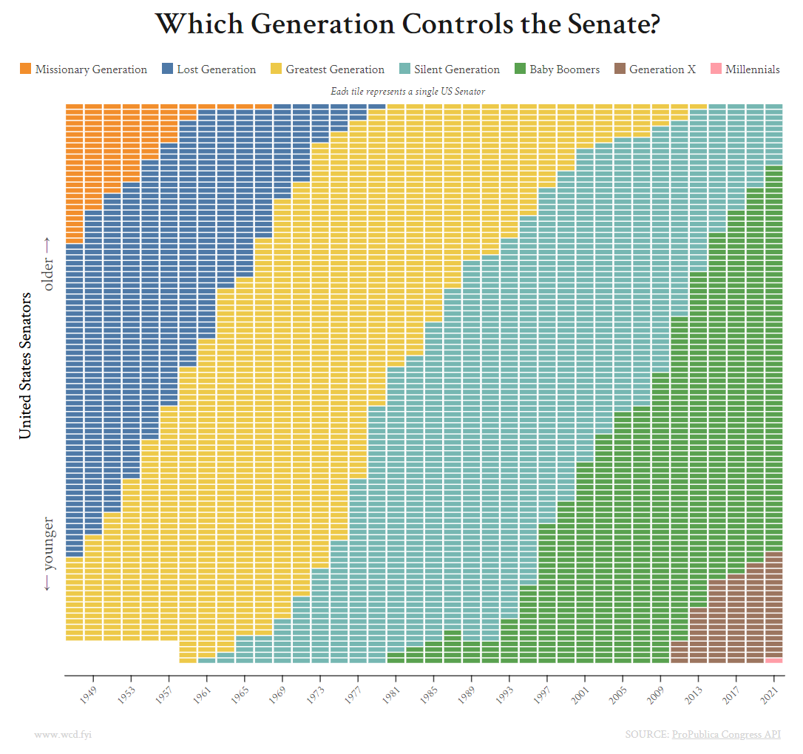
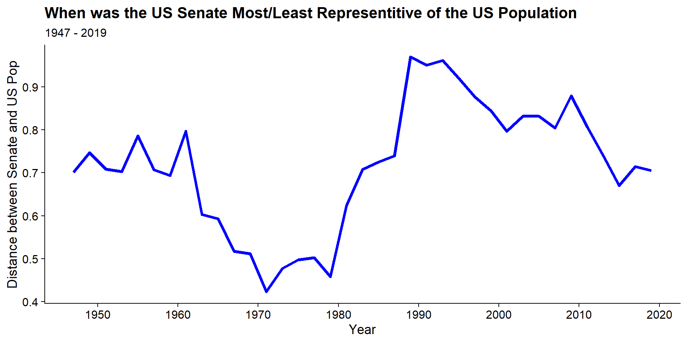
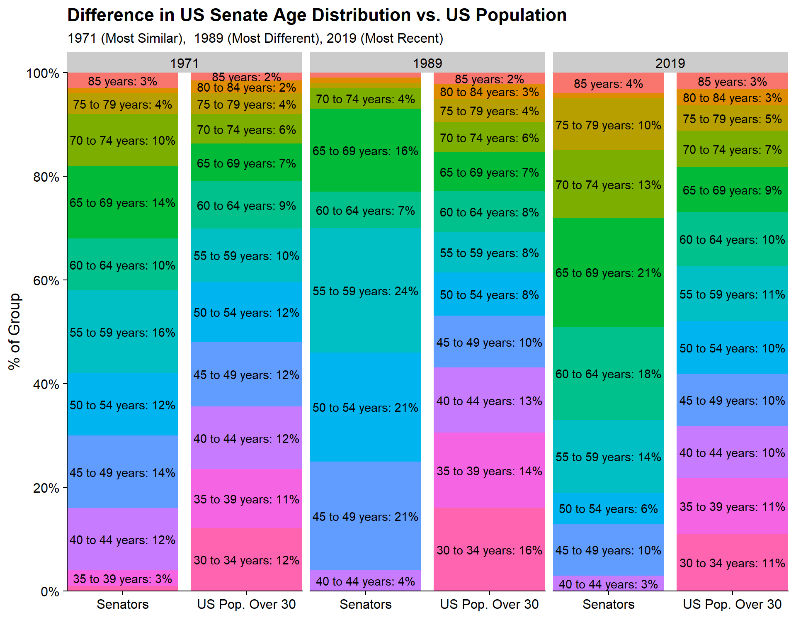

The inspiration for this post stemmed from wcd.fyi’s post on “Which Generations Control the Senate” where the creator broke down the US Senate distribution by generations.

Upon seeing this visualization my initial goal was to see whether certain generations’ trajectory were faster or slower than others and how that would shape our expectation of Senate control in the future. However, as that question expanded and as I thought about how we hear about how the Senate is old and doesn’t reflect the American population, I wanted to see whether or not that’s true.
The purpose of this post is to determine when the US Senate most and least reflected the age distribution of the general US population.
The data for this analysis will come from two primary sources. Information on the US Senators will come from the same ProPublica Congress API as the original visualization. Information on the US Population Age Distribution will come from a variety of source from the US Census Bureau.
While the workhorse functions for this analysis are the main tidyverse data manipulation and visualization functions, I will be using httr to access the Congress API and tidycensus to access a subset of age distributions. Special shoutout to readr for its various function to help read the differently formatted files from the Census Bureau
library(tidyverse) #Data Manipulation and Visualizaion
library(httr) #Accessing the ProPublica API
library(glue) #Manipulating Strings to Make API Calls Easier
library(lubridate) # Date Manipulation Functions
library(tidycensus) # Package for Accessing Census DataThe data on the Senators comes from the ProPublica Congress API. According to its documentation you can retrieve a list of Senators for any congress from the 80th (1947) through 117th (2021). To get this data I’ll first write a function that takes in a congressional session and returns the desired data.
get_senate_data <- function(cngrs){
# Issue request to API
dt <- GET(url = glue('https://api.propublica.org/congress/v1/{cngrs}/senate/members.json'),
add_headers("X-API-Key" = Sys.getenv("PROPUBLICA_API_KEY")))
x <- content(dt)$results[[1]]$members %>% tibble(dt = .) %>% unnest_wider(dt) %>%
mutate(congress = cngrs,
#The API only Contains 80th Congress Forward. 80th Congress was 1/1947
start_year = (cngrs-80)*2 + 1947,
# Use DOB to Infer Age
age = as.numeric(ymd(paste(start_year, 01, 15, sep = '-')) - ymd(date_of_birth))/365,
# Bucket Age Using Conventional Census Buckets
label = case_when(
age <= 4 ~ 'Under 5 years',
age <= 9 ~ '5 to 9 years',
age <= 14 ~ '10 to 14 years',
age <= 19 ~ '15 to 19 years',
age <= 24 ~ '20 to 24 years',
age <= 29 ~ '25 to 29 years',
age <= 34 ~ '30 to 34 years',
age <= 39 ~ '35 to 39 years',
age <= 44 ~ '40 to 44 years',
age <= 49 ~ '45 to 49 years',
age <= 54 ~ '50 to 54 years',
age <= 59 ~ '55 to 59 years',
age <= 64 ~ '60 to 64 years',
age <= 69 ~ '65 to 69 years',
age <= 74 ~ '70 to 74 years',
age <= 79 ~ '75 to 79 years',
age <= 84 ~ '80 to 84 years',
TRUE ~ '85 years'
)
)
return(x)
}Some notes about this function:
unnest_wider() function is part of a family of functions to help work with JSON output to turn lists of lists into more rectangular data.With the function in place, I can get all the Senate data with a single line to call the API for each of the 38 Congress’ and combine into a single tibble using map_dfr which applies the get_senate_data function to each input (the numbers between 80 and 117).
senate <- map_dfr(80:117, get_senate_data)The API will return all of the Senators who appeared in that Congressional session which due to changes over the course of two years can result in more than 2 senators appearing per state. For simplicity, I’ll reduce the data to only use the 2 senators who were there at the start of the congressional session. This is done using a heuristic that the Senators who were in-place first will have smaller govtrack_id numbers. Finally, senators without DOB information are removed.
senate_clean <- senate %>%
group_by(congress, state) %>%
arrange(govtrack_id) %>%
slice(1:2) %>%
ungroup() %>%
filter(!is.na(date_of_birth))This process was a PITA. Since I wanted to match the coverage of the Senator data which ranged from 1947 through 2021, I needed to find US Population Age Distributions to match. While all this information was available on the Census website it comes from a combination of different files, file formats, and access methods. In summary:
datapasta add-in to create the tibble.tidycensus API.There were probably easier ways to get everything… but oh well. Since there’s a lot going on for these 5 source, I’m going to not go into as much detail as I normally would in describing what’s happening, but its nothing too complicated.
The process for reading these flat files isn’t too dissimilar from the process used on the ProPublica API. I write a function to handle an individual year and run map_dfr on the list of years to create my data set. The one unique piece of this function is that the format of each year isn’t exactly the same, so it first reads the file to find where the data starts and then does the “official” read-in using the skip parameter to start in the right place.
get_1947_to_1979 <- function(yr){
#Read In File
c <- read_lines(glue('https://www2.census.gov/programs-surveys/popest/tables/1900-1980/national/asrh/pe-11-{yr}.csv'))
#Find where data starts
c2 <- which(str_detect(c, '^0'))
# Read in the actual file
x <- suppressWarnings(read_csv(glue('https://www2.census.gov/programs-surveys/popest/tables/1900-1980/national/asrh/pe-11-{yr}.csv'),
skip = c2-2)) %>%
filter(!is.na(X2)) %>%
transmute(
age = X1,
population = X2,
year = yr
)
}
ages_1947_to_1979 <- map_dfr(1947:1979, get_1947_to_1979)The data for 1980 to 1989 comes from a single fixed-width file. To read it in, I use the read_fwf function from readr. Its very similar to other readr functions like read_csv. The only difference is that you need to specify the positions of the data which can be done in a wide variety of ways. Here i used fwf_widths to tell the function how wide each column is and what to call each column.
The file also contains information at a State level and contains sets for both genders, Males only, and Females only. The rowid construction is so I can pull out only the rows I need for both genders and for the rows with age segment data. Finally, the group_by / summarize is to aggregate the population over the State values.
ages_1980_to_1989 <- read_fwf(
file = 'https://www2.census.gov/programs-surveys/popest/tables/1980-1990/state/asrh/s5yr8090.txt',
fwf_widths(c(16, 9, 9, 9, 9, 9, 9,9 , 9, 9, 9, 9,7 ),
c('Term', 'dropme', 'y1980', 'y1981','y1982', 'y1983','y1984',
'y1985', 'y1986','y1987', 'y1988','y1989', 'y1990')),
skip = 10
) %>%
mutate(rowid = row_number() %% 58) %>%
filter(rowid <= 20 & !rowid %in% c(0, 2, 1)) %>%
select(-dropme, -y1990, -rowid) %>%
gather(year, population, -Term) %>%
transmute(
label = Term,
year = as.numeric(str_remove_all(year, 'y')),
population = as.numeric(population)
) %>%
group_by(label, year) %>%
summarize(population = sum(population), .groups = 'drop')The data for the 1990s comes from a single file in a very machine unfriendly format. Here I copied and pasted the data I needed into an Excel file and used datapasta to copy it into R as a tibble. The wide-format data is then cleaned and turned into long-format data.
ages_1990_to_2000 <- tibble::tribble(
~Age_Group, ~y2000, ~y1999, ~y1998, ~y1997, ~y1996, ~y1995, ~y1994, ~y1993, ~y1992, ~y1991, ~y1990,
"Under 5 years.......", 18945000L, 18942000L, 18989000L, 19099000L, 19292000L, 19532000L, 19700000L, 19674000L, 19492000L, 19189000L, 18853000L,
"5 to 9 years........", 19681000L, 19947000L, 19929000L, 19754000L, 19439000L, 19096000L, 18752000L, 18442000L, 18293000L, 18205000L, 18062000L,
"10 to 14 years......", 20017000L, 19548000L, 19242000L, 19097000L, 19004000L, 18853000L, 18716000L, 18508000L, 18102000L, 17679000L, 17198000L,
"15 to 19 years......", 19894000L, 19748000L, 19542000L, 19146000L, 18708000L, 18203000L, 17743000L, 17375000L, 17180000L, 17235000L, 17765000L,
"20 to 24 years......", 18693000L, 18026000L, 17678000L, 17488000L, 17508000L, 17982000L, 18389000L, 18785000L, 19047000L, 19156000L, 19135000L,
"25 to 29 years......", 17625000L, 18209000L, 18575000L, 18820000L, 18933000L, 18905000L, 19107000L, 19570000L, 20140000L, 20713000L, 21236000L,
"30 to 34 years......", 19564000L, 19727000L, 20168000L, 20739000L, 21313000L, 21825000L, 22133000L, 22227000L, 22240000L, 22157000L, 21912000L,
"35 to 39 years......", 22044000L, 22545000L, 22615000L, 22636000L, 22553000L, 22296000L, 21978000L, 21605000L, 21098000L, 20530000L, 19982000L,
"40 to 44 years......", 22769000L, 22268000L, 21883000L, 21378000L, 20812000L, 20259000L, 19716000L, 19209000L, 18807000L, 18761000L, 17795000L,
"45 to 49 years......", 20059000L, 19356000L, 18853000L, 18467000L, 18430000L, 17458000L, 16678000L, 15931000L, 15359000L, 14099000L, 13824000L,
"50 to 54 years......", 17626000L, 16446000L, 15722000L, 15158000L, 13928000L, 13642000L, 13195000L, 12728000L, 12055000L, 11648000L, 11370000L,
"55 to 59 years......", 13452000L, 12875000L, 12403000L, 11755000L, 11356000L, 11086000L, 10931000L, 10678000L, 10483000L, 10422000L, 10474000L,
"60 to 64 years......", 10757000L, 10514000L, 10263000L, 10061000L, 9997000L, 10046000L, 10077000L, 10236000L, 10438000L, 10581000L, 10619000L,
"65 to 69 years......", 9414000L, 9447000L, 9592000L, 9777000L, 9901000L, 9926000L, 9967000L, 10013000L, 9974000L, 10027000L, 10077000L,
"70 to 74 years......", 8758000L, 8771000L, 8798000L, 8751000L, 8789000L, 8831000L, 8736000L, 8616000L, 8468000L, 8244000L, 8023000L,
"75 to 79 years......", 7425000L, 7329000L, 7215000L, 7083000L, 6891000L, 6700000L, 6586000L, 6483000L, 6398000L, 6280000L, 6147000L,
"80 to 84 years......", 4968000L, 4817000L, 4732000L, 4661000L, 4575000L, 4478000L, 4360000L, 4255000L, 4140000L, 4039000L, 3935000L,
"85 to 89 years......", 2734000L, 2625000L, 2554000L, 2477000L, 2415000L, 2352000L, 2300000L, 2247000L, 2178000L, 2104000L, 2051000L,
"90 to 94 years......", 1196000L, 1148000L, 1116000L, 1078000L, 1043000L, 1017000L, 967000L, 916000L, 865000L, 827000L, 765000L,
"95 to 99 years......", 369000L, 343000L, 323000L, 304000L, 291000L, 268000L, 250000L, 240000L, 231000L, 218000L, 206000L,
"100 years and over..", 68000L, 59000L, 57000L, 54000L, 51000L, 48000L, 45000L, 43000L, 41000L, 40000L, 37000L
) %>%
mutate(label = str_remove_all(Age_Group, '\\.')) %>%
select(-Age_Group) %>%
gather(year, population, -label) %>%
mutate(year = as.numeric(str_remove_all(year, 'y')))The 2001-2004 file is pretty similar to the 1980s file.
ages_2001_to_2004 <- read_csv('https://www2.census.gov/programs-surveys/popest/tables/2000-2005/national/asrh/nc-est2005-01.csv',
skip = 3) %>%
filter(between(row_number(), 2, 22)) %>%
gather(year, population, -X1) %>%
transmute(
label = str_remove_all(X1, '\\.'),
year = as.numeric(str_extract(year, '\\d{4}')),
population
) %>%
filter(!is.na(year), between(year, 2001, 2004))There’s probably a better way to do this but my original plan was to try to find as granular age buckets as possible and 2005 - 2019 was the first set of years I worked with. So I leveraged the tidycensus package to access the data from the American Community Survey to get population estimates.
#Register API Key
census_api_key(Sys.getenv("CENSUS_API_KEY"))
#Download Data Dictionary
vars <- load_variables(2019, 'acs1')
#Subset to Information For the Age Table
mapping <- vars %>%
filter(str_detect(name, 'B01001_'))
# Define Function that Takes in a Year and Returns the Age Group Data
# Data provided at a State Level because I couldn't figure out the
# geography name for National.
get_2005_2019 <- function(yr){
get_acs(
geography = 'state',
variables = c(
'B01001_001',
'B01001_002',
'B01001_003',
'B01001_004',
'B01001_005',
'B01001_006',
'B01001_007',
'B01001_008',
'B01001_009',
'B01001_010',
'B01001_011',
'B01001_012',
'B01001_013',
'B01001_014',
'B01001_015',
'B01001_016',
'B01001_017',
'B01001_018',
'B01001_019',
'B01001_020',
'B01001_021',
'B01001_022',
'B01001_023',
'B01001_024',
'B01001_025',
'B01001_026',
'B01001_027',
'B01001_028',
'B01001_029',
'B01001_030',
'B01001_031',
'B01001_032',
'B01001_033',
'B01001_034',
'B01001_035',
'B01001_036',
'B01001_037',
'B01001_038',
'B01001_039',
'B01001_040',
'B01001_041',
'B01001_042',
'B01001_043',
'B01001_044',
'B01001_045',
'B01001_046',
'B01001_047',
'B01001_048',
'B01001_049'
),
year = yr,
survey = 'acs1'
) %>%
mutate(year = yr) %>%
inner_join(vars, by = c("variable" = "name")) %>%
filter(str_detect(label, "years")) %>%
mutate(label = str_remove_all(label, "Estimate.*!!"))
}
# Download the Data from the API and Clean Up
ages_2005_to_2019 <- map_dfr(2005:2019, get_2005_2019) %>%
group_by(year, label) %>%
summarize(population = sum(estimate), .groups = 'drop')In addition to have different file formats each of the files had different age groupings. They’re not wildly different from each other but we need to have standardized groupings to carry out the analysis:
all_years <- ages_1947_to_1979 %>%
mutate(
age = parse_number(age),
label = case_when(
age <= 4 ~ 'Under 5 years',
age <= 9 ~ '5 to 9 years',
age <= 14 ~ '10 to 14 years',
age <= 19 ~ '15 to 19 years',
age <= 24 ~ '20 to 24 years',
age <= 29 ~ '25 to 29 years',
age <= 34 ~ '30 to 34 years',
age <= 39 ~ '35 to 39 years',
age <= 44 ~ '40 to 44 years',
age <= 49 ~ '45 to 49 years',
age <= 54 ~ '50 to 54 years',
age <= 59 ~ '55 to 59 years',
age <= 64 ~ '60 to 64 years',
age <= 69 ~ '65 to 69 years',
age <= 74 ~ '70 to 74 years',
age <= 79 ~ '75 to 79 years',
age <= 84 ~ '80 to 84 years',
TRUE ~ '85 years',
)
) %>%
group_by(year, label) %>%
summarize(population = sum(population), .groups = 'drop') %>%
rbind(ages_1980_to_1989) %>%
rbind(
ages_1990_to_2000 %>%
rbind(ages_2001_to_2004) %>%
mutate(
label = if_else(label %in% c('85 to 89 years',
'90 to 94 years',
'95 to 99 years',
'100 years and over'),
'85 years',
label
)
)
) %>%
rbind(
ages_2005_to_2019 %>%
mutate(label = case_when(
label %in% c("15 to 17 years", "18 and 19 years") ~ "15 to 19 years",
label %in% c("20 years", "21 years", "22 to 24 years") ~ "20 to 24 years",
label %in% c("60 and 61 years", "62 to 64 years") ~ "60 to 64 years",
label %in% c("65 and 66 years", "67 to 69 years") ~ "65 to 69 years",
label == '85 years and over' ~ '85 years',
TRUE ~ label
)
)
) %>%
group_by(year, label) %>%
summarize(population = sum(population), .groups = 'drop')By law a US Senator needs to be at least 30 years old (technically, this wasn’t always true as there are 4 US Senators who were in their late-20s, but those were all in the early 1800s so out of scope for this analysis) so to create a comparable population I’ll limit the US population data to those 30 and older and create the share of 30+ population by age:
eligible_age_bckt <- all_years %>%
filter(parse_number(label) >= 30) %>%
add_count(year, wt = population, name = 'total_population') %>%
mutate(pct = population / total_population)I’ll summarize the Senate data by the same groupings and create the % of Senators by age:
senate_age_bckt <- senate_clean %>%
count(start_year, label, name = 'num_senators') %>%
add_count(start_year, wt = num_senators, name = "total_senators") %>%
mutate(pct = num_senators / total_senators)Finally, we’ll complete the data building steps by stacking the US population data and Senate data on top of each other:
pop_senate_merged <-
senate_age_bckt %>%
transmute(
year = start_year, label, pct, grp = "Senators"
) %>%
rbind(eligible_age_bckt %>%
transmute(year, label, pct, grp = "US Pop. Over 30"))
knitr::kable(head(pop_senate_merged, 3))| year | label | pct | grp |
|---|---|---|---|
| 1947 | 35 to 39 years | 0.0315789 | Senators |
| 1947 | 40 to 44 years | 0.0947368 | Senators |
| 1947 | 45 to 49 years | 0.0842105 | Senators |
Now onto the main course!
Our goal is to determine when the distribution of ages in the Senate are most similar / dissimilar to the distribution of ages in the US Over 30 population. There are many different ways to calculate similarity but for I’m going to keep it simple and use mean absolute difference because its simple and the results are pretty similar to other methods I tried.
dist_measures <- pop_senate_merged %>%
#Convert to Long Format to Wide Format
spread(grp, pct) %>%
# Replace NAs with 0s
replace_na(list(Senators = 0, `US Pop. Over 30` = 0)) %>%
# Calculate Mean Abs Difference
mutate(distance = abs(Senators - `US Pop. Over 30`)) %>%
# Limit to Only Odd Years To Align with Congressional Sessions
# There isn't 2021 Data in the Census Data
filter(year %% 2 == 1, year != 2021) %>%
# Add Up Absolute Deviations
group_by(year) %>%
summarize(distance = mean(distance))Then the dissimilarity over time can be plotted:
dist_measures %>%
ggplot(aes(x = year, y = distance)) +
geom_line(lwd = 1.5, color = 'blue') +
scale_x_continuous(breaks = seq(1950, 2020, 10)) +
labs(x = "Year", y = "Distance between Senate and US Pop",
title = "When was the US Senate Most/Least Representitive of the US Population",
subtitle = "1947 - 2019") +
cowplot::theme_cowplot()
Based on the above, the most representative era for the US Senate was in the 70s when the distance was minimized while least representative time was in the late 80s/early 90s. The three most representative years are 1971, 1979, and 1973, while the least representative years are 1989, 1993, and 1991. What was surprising is that the present time is actually more representative than in the 90s and about on the level that it was in the 60s.
To get a better idea of what makes these years representative or non-representative we can look at the distributions for the most similar year, 1971, the most dissimilar year, 1989, and the most recent year available, 2019.
pop_senate_merged %>%
filter(year %in% c(1971, 1989, 2019)) %>%
ggplot(aes(x = grp, y = pct, fill = fct_rev(label))) +
geom_col() +
geom_text(aes(label =if_else(pct > .01,
paste(label, pct %>% scales::percent(accuracy = 1), sep = ': '), "")),
position = position_stack(vjust = .5)) +
scale_fill_discrete(guide = F) +
scale_x_discrete(expand = c(0, 0)) +
scale_y_continuous(expand = c(0, 0), labels = scales::percent_format(),
breaks = seq(0, 1, .2)) +
facet_wrap(~year, nrow = 1) +
labs(title = "Difference in US Senate Age Distribution vs. US Population",
subtitle = "1971 (Most Similar), 1989 (Most Different), 2019 (Most Recent)",
x = "",
y = "% of Group") +
cowplot::theme_cowplot()
While the Senate never represented the 30-45 population well, in 1971 the distributions were closer with 15% of Senators vs. 35% of the Population. This is much closer than in 1989 when this group made up 4% of Senators vs. 43% of the population and closer than today (2019) when its 3% of Senators vs. 32% of the population.
Finally, between 1989 and 2019 it looks like a glut of Senators who were between 45 and 60 (which was 66% of the Senate in 1989 vs. 26% of the Population) have hung-around as in 2019 this group would be 65 to 80 which still makes up 44% of the Senate vs. 21% of the US Population).
So while this is the oldest Senate we’ve ever had its not the most non-representative to the US Population as the population has gotten older too.